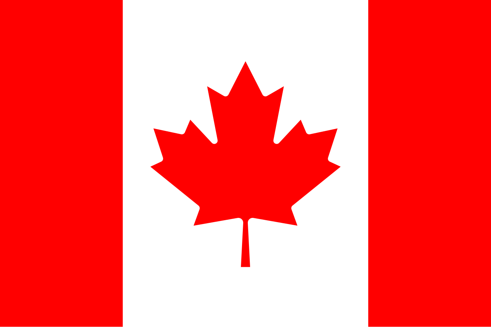
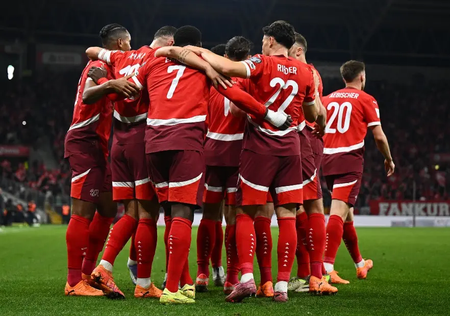
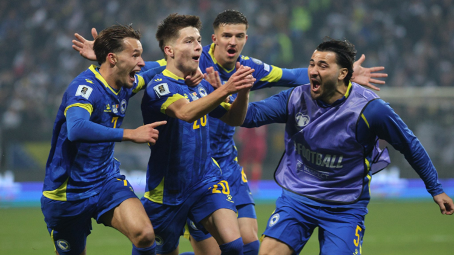
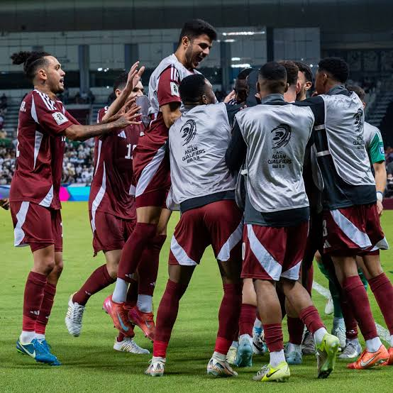

GRUPO B
DETALLE DE SELECCIONES
Estadios, historia, estadísticas, convocados y curiosidades
Canadá 🇨🇦
Sin títulos📍 Sede / Ciudad: Toronto (BMO Field) / Vancouver (BC Place)

🇨🇦 Selección de Canadá rumbo al Mundial 2026
Participaciones (3)
1986, 2022, 2026.
Estadísticas Mundiales
0 Victorias | 0 Empates | 4 Derrotas
⭐ Mejor resultado: Fase de grupos
Clasificación al Mundial 2026
Canadá participa automáticamente por ser uno de los países anfitriones del Mundial 2026 junto con México y Estados Unidos.
Historia en la Copa
Después de debutar en España 1986, Canadá volvió a un Mundial en Qatar 2022 tras una brillante eliminatoria. Con una nueva generación de futbolistas busca consolidarse como una de las mejores selecciones de la CONCACAF.
💡 Curiosidad
Alphonso Davies marcó el primer gol de Canadá en una Copa Mundial durante Qatar 2022.
Jugadores Convocados
- Milan Borjan
- Dayne St. Clair
- Alphonso Davies
- Jonathan David
- Cyle Larin
- Stephen Eustáquio
- Tajon Buchanan
- Ismaël Koné
- Moïse Bombito
- Alistair Johnston
- Richie Laryea
- Derek Cornelius
Suiza 🇨🇭
Sin títulos📍 Sede / Ciudad: Zúrich (Letzigrund Stadium) / Basilea (St. Jakob-Park)

🇨🇭 Selección de Suiza en la Copa del Mundo
Participaciones (13)
1934, 1938, 1950, 1954, 1962, 1966, 1994, 2006, 2010, 2014, 2018, 2022, 2026.
Estadísticas Mundiales
19 Victorias | 8 Empates | 20 Derrotas
⭐ Mejor resultado: Cuartos de final
Clasificación al Mundial 2026
Suiza obtuvo su clasificación mediante las Eliminatorias UEFA, manteniéndose como una de las selecciones más competitivas del continente europeo.
Historia en la Copa
Suiza ha sido un participante habitual de los Mundiales desde la década de 1930. Es reconocida por su organización táctica y por competir de igual a igual con las grandes potencias del fútbol.
💡 Curiosidad
Suiza fue el país anfitrión de la Copa Mundial de 1954, donde se disputó la histórica final conocida como el "Milagro de Berna".
Jugadores Convocados
- Yann Sommer
- Gregor Kobel
- Manuel Akanji
- Ricardo Rodríguez
- Granit Xhaka
- Denis Zakaria
- Remo Freuler
- Xherdan Shaqiri
- Dan Ndoye
- Noah Okafor
- Zeki Amdouni
- Breel Embolo
Bosnia y Herzegovina 🇧🇦
Sin títulos📍 Sede / Ciudad: Sarajevo (Stadion Grbavica) / Zenica (Bilino Polje)

🇧🇦 Selección de Bosnia y Herzegovina
Participaciones (2)
2014, 2026.
Estadísticas Mundiales
1 Victoria | 0 Empates | 2 Derrotas
⭐ Mejor resultado: Fase de grupos
Clasificación al Mundial 2026
Bosnia y Herzegovina logró su clasificación tras una destacada campaña en las Eliminatorias UEFA, regresando a una Copa del Mundo después de varios años de ausencia.
Historia en la Copa
Su debut mundialista fue en Brasil 2014, convirtiéndose en una de las selecciones europeas más jóvenes en disputar el torneo. Desde entonces ha buscado consolidarse entre los equipos competitivos del continente.
💡 Curiosidad
Edin Džeko fue el capitán y máximo referente de Bosnia durante su primera participación mundialista.
Jugadores Convocados
- Ibrahim Šehić
- Nikola Vasilj
- Amar Dedić
- Sead Kolašinac
- Anel Ahmedhodžić
- Rade Krunić
- Benjamin Tahirović
- Haris Hajradinović
- Edin Džeko
- Ermedin Demirović
- Amar Rahmanović
- Luka Menalo
Qatar 🇶🇦
Sin títulos📍 Sede / Ciudad: Doha (Lusail Stadium) / Al Rayyan (Education City Stadium)

🇶🇦 Selección de Qatar
Participaciones (2)
2022, 2026.
Estadísticas Mundiales
0 Victorias | 0 Empates | 3 Derrotas
⭐ Mejor resultado: Fase de grupos
Clasificación al Mundial 2026
Qatar consiguió su clasificación representando a la Confederación Asiática de Fútbol (AFC), buscando continuar el crecimiento mostrado tras organizar el Mundial 2022.
Historia en la Copa
Qatar debutó en la Copa Mundial como país anfitrión en 2022. En los últimos años ha invertido fuertemente en el desarrollo del fútbol, logrando también conquistar la Copa Asiática.
💡 Curiosidad
Qatar ganó la Copa Asiática en 2019 y nuevamente en 2023, consolidándose como una de las selecciones más fuertes del continente asiático.
Jugadores Convocados
- Meshaal Barsham
- Saad Al Sheeb
- Bassam Al-Rawi
- Pedro Miguel
- Homam Ahmed
- Abdelkarim Hassan
- Hasan Al Haydos
- Assim Madibo
- Akram Afif
- Almoez Ali
- Ahmed Alaaeldin
- Ismaeel Mohammad